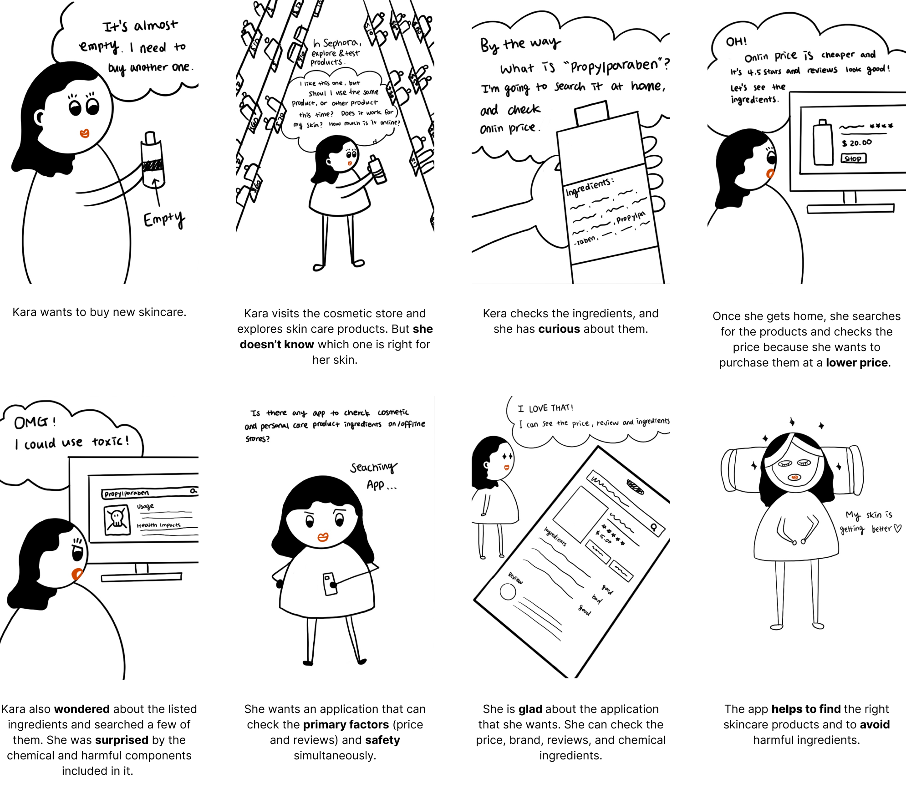
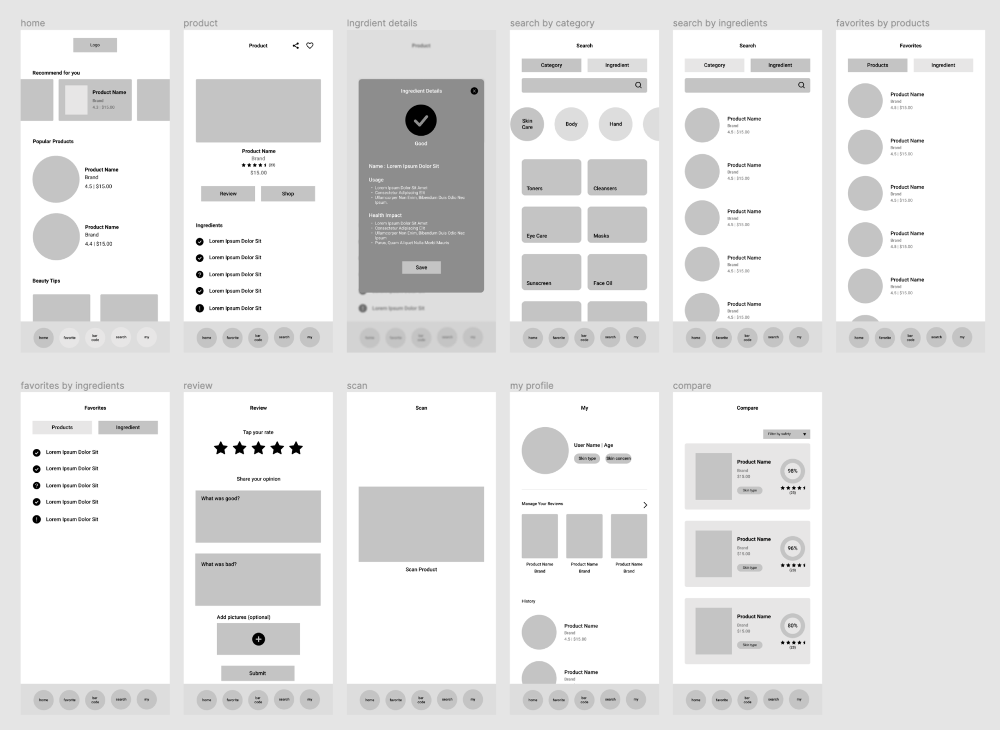

Checkco
Giving a safe and reasonable consumption of cosmetic and skincare products shopping experience.
View final prototypeTimeline:
May 2021
Role:
UI/UX & Visual Design
(End-to-End Design Process)
Team:
Indiviidual (Conceptual Project)
Overview
This project is my passion for understanding the UX design process and fundamentals. The app idea came across the documentary 'Toxic Beauty' that shows cosmetic and personal care products affect the unhealthy way to the human body. So, I designed the Checkco app that can check the ingredients of personal care and cosmetic products for those who want to avoid harmful components and chemicals so that users can find the right cosmetics for their skin and protect their health.
Problem

Take a shower using shampoo and body wash, then put on lotion on my face. In the case of women, they put on makeup before going out. It is the users' daily routine during the interview. People use cosmetics and skin care products to protect their skin for beauty. However, people are unfamiliar with its ingredients, and they rarely check with it even though it could affect the unhealthy way in their body. Besides, the ingredients' name is chemical jargon, so it is hard to understand without explanation unless people are experts.
Design Challenge
How might we design the app to help reasonable consumption and purchase cosmetic products safely?
Goal
User
Product
The Process

Initial Assumptions:
To start off, I used both qualitative and quantitative research methods. I created a survey form to prove my initial assumption. Then, I conducted in-depth user interviews with three target audiences to uncover their pain points and needs. I created affinity mapping for the group and organized the information.
Key insights
1Review & Price are top priorities when people purchase cosmetic products.
2Reviews are not always helpful since each person has different skin type and concern.
3Ingredients are not their consideration, but people have curious about whether it is harmful or not.
Persona
Based on the user interview, I developed the user persona and visualized a storyboard in the define phase. This process helped me define the user's specific problems and needs. Also, it helped me learn about their behavior and emotion through their journey.

Storyboard
Sketch
.png)
To develop the design, I gathered all information, drew quick sketches, and walked through it with one interviewer. And based on the user’s feedback I developed the low fidelity prototype.
- What if the products don't show up when I search for them?
Lo-Fi Wireframe
Solution
tches, and walked through it with one interviewer. And based on the user’s feedback I developed the low fidelity prototype.

Sign-up & Profile
Create your skin profile.
When users sign up for the app, the app will collect their personal and skin health information so that the app can provide the recommended cosmetic/skincare products on the home screen.
Search
Easy to search products/ingredients.
I added the features that can scan the product using object recognition, or users could type in the search bar. For the users who want to use other products, It allows discovering other products through the discover section.


Product Details
Check product's safety.
I decided to visualize and summarize the safety using color to give users quick and easy to recognize the product's safety.
Compare
Help you make a better decision.
Before purchasing, users spend a lot of time comparing the product. The compare feature provides the primary factors that user's consideration and products safety all at once.

Reflection
I learnt a
Next Step
I learnt a
If I have more time...
I want to user testing and develop prototype.